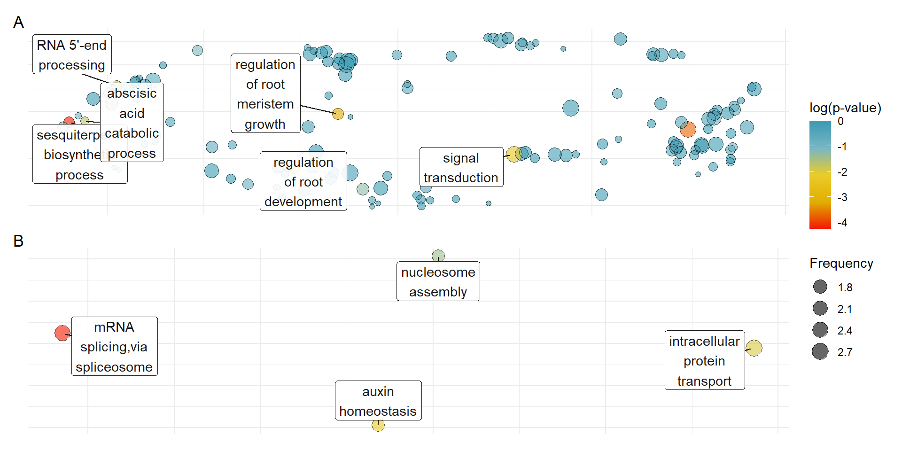

GO enrichment
Philipp Bayer
01/10/2021
Last updated: 2022-04-26
Checks: 7 0
Knit directory:
Amphibolis_Posidonia_Comparison/
This reproducible R Markdown analysis was created with workflowr (version 1.6.2). The Checks tab describes the reproducibility checks that were applied when the results were created. The Past versions tab lists the development history.
Great! Since the R Markdown file has been committed to the Git repository, you know the exact version of the code that produced these results.
Great job! The global environment was empty. Objects defined in the global environment can affect the analysis in your R Markdown file in unknown ways. For reproduciblity it’s best to always run the code in an empty environment.
The command set.seed(20210414) was run prior to running
the code in the R Markdown file. Setting a seed ensures that any results
that rely on randomness, e.g. subsampling or permutations, are
reproducible.
Great job! Recording the operating system, R version, and package versions is critical for reproducibility.
Nice! There were no cached chunks for this analysis, so you can be confident that you successfully produced the results during this run.
Great job! Using relative paths to the files within your workflowr project makes it easier to run your code on other machines.
Great! You are using Git for version control. Tracking code development and connecting the code version to the results is critical for reproducibility.
The results in this page were generated with repository version 06ceb9d. See the Past versions tab to see a history of the changes made to the R Markdown and HTML files.
Note that you need to be careful to ensure that all relevant files for
the analysis have been committed to Git prior to generating the results
(you can use wflow_publish or
wflow_git_commit). workflowr only checks the R Markdown
file, but you know if there are other scripts or data files that it
depends on. Below is the status of the Git repository when the results
were generated:
Ignored files:
Ignored: .Rhistory
Ignored: .Rproj.user/
Ignored: analysis/OTT.nb.html
Ignored: analysis/plotRgenes.nb.html
Unstaged changes:
Modified: data/Lost_present_gene_lists/Genes_lost_in_A_antarctica_not_other_seagrasses.txt
Modified: data/Lost_present_gene_lists/Genes_lost_in_P_australis_not_other_seagrasses.txt
Modified: data/Lost_present_gene_lists/Genes_lost_in_Z_marina_not_other_seagrasses.txt
Modified: data/Lost_present_gene_lists/Genes_lost_in_Z_muelleri_not_other_seagrasses.txt
Modified: data/Lost_present_gene_lists/Genes_only_in_Algae.txt
Modified: data/Lost_present_gene_lists/Genes_only_in_Aquatics_and_Seagrasses.txt
Modified: data/Lost_present_gene_lists/Genes_only_in_Aquatics_and_Seagrasses_and_Terrestrials.txt
Modified: data/Lost_present_gene_lists/Genes_only_in_Duckweeds.txt
Modified: data/Lost_present_gene_lists/Genes_only_in_Seagrasses.txt
Modified: data/Lost_present_gene_lists/Genes_only_in_Terrestrials.txt
Modified: data/Lost_present_gene_lists/Genes_union_of_Seagrass_and_Aquatics_union.txt
Modified: data/arabidopsis_gene_level_comparison.xlsx
Modified: data/arabidopsis_gene_level_comparison_only_losts.xlsx
Modified: data/arabidopsis_gene_level_counts.xlsx
Modified: output/GO_results_genes_in_Aquatics_and_Seagrasses_NOT_Terrestrials.csv
Modified: output/GO_results_genes_in_Duckweeds_NOT_Algae_NOT_Seagrasses_NOT_Terrestrials.csv
Modified: output/GO_results_genes_in_Seagrasses_NOT_Algae_NOT_Duckweeds_NOT_Terrestrials.csv
Modified: output/GO_results_genes_in_Terrestrials_NOT_Aquatics_NOT_Seagrasses.csv
Modified: output/GO_results_genes_union_Aquatics_and_Seagrasses_NOT_Terrestrials.csv
Modified: output/group_venn_image.Rdata
Note that any generated files, e.g. HTML, png, CSS, etc., are not included in this status report because it is ok for generated content to have uncommitted changes.
These are the previous versions of the repository in which changes were
made to the R Markdown (analysis/GOenrichment.Rmd) and HTML
(docs/GOenrichment.html) files. If you’ve configured a
remote Git repository (see ?wflow_git_remote), click on the
hyperlinks in the table below to view the files as they were in that
past version.
| File | Version | Author | Date | Message |
|---|---|---|---|---|
| html | 663dcbc | Philipp Bayer | 2022-03-10 | Build site. |
| Rmd | d4cd865 | Philipp Bayer | 2022-03-10 | make the setup blocks nicer |
| html | aca07fd | Philipp Bayer | 2022-03-10 | Build site. |
| Rmd | be91c66 | Philipp Bayer | 2022-03-10 | GO-term updates! more groups! for the price of one! |
| Rmd | 2edd81b | Philipp Bayer | 2022-03-09 | add more ifles |
| Rmd | cec9544 | Philipp Bayer | 2022-03-01 | Add general descriptions |
| html | 5b15384 | Philipp Bayer | 2022-02-28 | Build site. |
| Rmd | 581bebd | Philipp Bayer | 2022-02-28 | accidentally did not display REVIGO code |
| html | 6eeb3ed | Philipp Bayer | 2022-02-25 | Add missing files |
| html | 9ca6c94 | Philipp Bayer | 2022-02-25 | Build site. |
| Rmd | 61c8f69 | Philipp Bayer | 2022-02-25 | Replace GO enrichment |
| html | 9b59467 | Philipp Bayer | 2022-02-23 | Rewrite Orthofinder analysis |
| Rmd | ab9a1f6 | Philipp Bayer | 2022-02-21 | add some more changes |
| html | 65d3fa4 | Philipp Bayer | 2021-12-20 | Build site. |
| Rmd | 21f4c6f | Philipp Bayer | 2021-12-20 | fix tables again, finally :) haha |
| html | d8ec8d3 | Philipp Bayer | 2021-12-20 | Build site. |
| Rmd | 2fb63eb | Philipp Bayer | 2021-12-20 | fix tables again, finally :) |
| html | cf2e045 | Philipp Bayer | 2021-12-20 | Build site. |
| Rmd | 280fc5d | Philipp Bayer | 2021-12-20 | fix tables again |
| html | 5356e2c | Philipp Bayer | 2021-12-20 | Build site. |
| Rmd | 9f4be6f | Philipp Bayer | 2021-12-20 | fix tables |
| html | 7816b8c | Philipp Bayer | 2021-12-20 | Build site. |
| Rmd | 73bffa4 | Philipp Bayer | 2021-12-20 | add tables |
| html | c1288a4 | Philipp Bayer | 2021-12-20 | Build site. |
| Rmd | 2691cad | Philipp Bayer | 2021-12-20 | add tables |
| html | 292db59 | Philipp Bayer | 2021-10-18 | Build site. |
| Rmd | 35aa72f | Philipp Bayer | 2021-10-18 | wflow_publish(c("analysis/GOenrichment.Rmd", "analysis/plotGenes.Rmd", |
| Rmd | 7e370e9 | Philipp Bayer | 2021-10-07 | Updated GOenrichment |
| Rmd | 95586f9 | Philipp Bayer | 2021-10-07 | Add missing data |
| html | 95586f9 | Philipp Bayer | 2021-10-07 | Add missing data |
| html | c0db4a5 | Philipp Bayer | 2021-10-07 | Build site. |
| Rmd | 08b28ea | Philipp Bayer | 2021-10-07 | wflow_publish(files = c("analysis/*")) |
library(topGO)Warning: package 'S4Vectors' was built under R version 4.1.1Warning: package 'SparseM' was built under R version 4.1.1library(tidyverse)Warning: package 'tidyverse' was built under R version 4.1.2Warning: package 'ggplot2' was built under R version 4.1.1Warning: package 'tibble' was built under R version 4.1.1Warning: package 'tidyr' was built under R version 4.1.1Warning: package 'readr' was built under R version 4.1.2Warning: package 'purrr' was built under R version 4.1.1Warning: package 'dplyr' was built under R version 4.1.1Warning: package 'stringr' was built under R version 4.1.1Warning: package 'forcats' was built under R version 4.1.1library(rvest)Warning: package 'rvest' was built under R version 4.1.1library(wesanderson)Warning: package 'wesanderson' was built under R version 4.1.1library(httr)Warning: package 'httr' was built under R version 4.1.1library(stringi)Warning: package 'stringi' was built under R version 4.1.1library(ggrepel)Warning: package 'ggrepel' was built under R version 4.1.1library(eulerr)Warning: package 'eulerr' was built under R version 4.1.1library(UpSetR)Warning: package 'UpSetR' was built under R version 4.1.1library(rrvgo)
library(kableExtra)Warning: package 'kableExtra' was built under R version 4.1.2library(patchwork)Warning: package 'patchwork' was built under R version 4.1.1knitr::opts_knit$set(root.dir = rprojroot::find_rstudio_root_file())Lost in seagrasses
The GO enrichment does not work well on my laptop so I’m setting this to eval=FALSE and run it on a remote server.
This document takes the output of Orthofinder
# give properly formatted background in format: GO:0005838 GSBRNA2T00088508001;GSBRNA2T00088313001;GSBRNA2T00035842001
#annAT <- readMappings('BACKGROUND.txt.gz', sep="\t", IDsep=";")
#save(annAT, file='annAtObject.RData')
load('annAtObject.RData')
allgenes <- unique(unlist(annAT))
compare <- function(genelistfile, outname, allgenes, annAT) {
# give file with your genes of interest, one gene_id per line
mygenes <-scan(genelistfile ,what="")
geneList <- factor(as.integer(allgenes %in% mygenes))
names(geneList) <- allgenes
GOdata <-new ("topGOdata", ontology = 'BP', allGenes = geneList, nodeSize = 5, annot=annFUN.GO2genes, GO2genes=annAT)
# using ClassicCount:
#test.stat <-new ("classicCount", testStatistic = GOFisherTest, name = "Fisher Test")
#resultsFisherC <-getSigGroups (GOdata, test.stat)
# using weight01:
weight01.fisher <- runTest(GOdata, statistic = "fisher")
# using ClassicCount:
# allRes <- GenTable(GOdata, classicFisher= resultsFisherC, topNodes = 30)
# using weight01:
allRes <- GenTable(GOdata, classicFisher=weight01.fisher,topNodes=30)#,topNodes=100)
names(allRes)[length(allRes)] <- "p.value"
p_values <- score(weight01.fisher)
adjusted_p <- p.adjust(p_values)
adjusted_p[adjusted_p < 0.05] %>% enframe() %>% write_csv('data/' + outname)
}Comparing the four big groups
# all genes shared - this runs out of memory
#compare('Lost_present_gene_lists/Genes_only_in_Aquatics_and_Seagrasses_and_Terrestrials.txt', 'output/GO_results_genes_in_Aquatics_and_Seagrasses_and_Terrestrials.csv', allgenes, annAT)
# Genes in aquatics and seagrasses - IMPORTANT This is NOT the union - this is the intersection!
# Union is below
compare('Lost_present_gene_lists/Genes_only_in_Aquatics_and_Seagrasses.txt', 'output/GO_results_genes_in_Aquatics_and_Seagrasses_NOT_Terrestrials.csv', allgenes, annAT)
# Genes only in algae
compare('Lost_present_gene_lists/Genes_only_in_Algae.txt', 'output/GO_results_genes_in_Algae_NOT_Duckweeds_NOT_Seagrasses_NOT_Terrestrials.csv', allgenes, annAT)
# Genes only in seagrasses
compare('Lost_present_gene_lists/Genes_only_in_Seagrasses.txt', 'output/GO_results_genes_in_Seagrasses_NOT_Algae_NOT_Duckweeds_NOT_Terrestrials.csv', allgenes, annAT)
# Genes only in duckweeds
compare('Lost_present_gene_lists/Genes_only_in_Duckweeds.txt', 'output/GO_results_genes_in_Duckweeds_NOT_Algae_NOT_Seagrasses_NOT_Terrestrials.csv', allgenes, annAT)
# Genes only in terrestrials
compare('Lost_present_gene_lists/Genes_only_in_Terrestrials.txt', 'output/GO_results_genes_in_Terrestrials_NOT_Aquatics_NOT_Seagrasses.csv', allgenes, annAT)
# Genes union of Seagrass and Aquatics
compare('Lost_present_gene_lists/Genes_union_of_Seagrass_and_Aquatics_union.txt', 'output/GO_results_genes_union_Aquatics_and_Seagrasses_NOT_Terrestrials.csv', allgenes, annAT)
# Genes only in seagrasses- seagrass-specific
compare('Lost_present_gene_lists/Genes_in_all_seagrasses_intersect.txt', 'output/GO_results_genes_in_all_seagrasses_vs_backgroundAll_intersect.csv', allgenes, annAT)
compare('Lost_present_gene_lists/Genes_in_all_seagrasses_union.txt', 'output/GO_results_genes_in_all_seagrasses_vs_backgroundAll_union.csv', allgenes, annAT)Seagrass only comparisons
Now we compare seagrasses within each other.
For the seagrass-only comparisons, I’m using a Seagrass-only background as that makes more biological sense to me.s
# give properly formatted background in format: GO:0005838 GSBRNA2T00088508001;GSBRNA2T00088313001;GSBRNA2T00035842001
#sannAT <- readMappings('SEAGRASSBACKGROUND.txt', sep="\t", IDsep=";")
#save(sannAT, file='sannAtObject.RData')
load('sannAtObject.RData')
sallgenes <- unique(unlist(sannAT))lost in seagrasses
compare('Lost_present_gene_lists/Genes_lost_in_A_antarctica_not_other_seagrasses.txt', 'output/GO_results_genes_lost_A_antarctica_not_other_seagrasses.csv', sallgenes, sannAT)
compare('Lost_present_gene_lists/Genes_lost_in_Z_marina_not_other_seagrasses.txt', 'output/GO_results_genes_lost_Z_marina_not_other_seagrasses.csv', sallgenes, sannAT)
compare('Lost_present_gene_lists/Genes_lost_in_P_australis_not_other_seagrasses.txt', 'output/GO_results_genes_lost_P_australis_not_other_seagrasses.csv', sallgenes, sannAT)
compare('Lost_present_gene_lists/Genes_lost_in_Z_muelleri_not_other_seagrasses.txt', 'output/GO_results_genes_lost_Z_muelleri_not_other_seagrasses.csv', sallgenes, sannAT)Present in seagrasses
compare('Lost_present_gene_lists/Genes_in_all_seagrasses_intersect.txt', 'output/GO_results_genes_in_all_seagrasses_vs_seagrassesBackground_intersect.csv', sallgenes, sannAT)
compare('Lost_present_gene_lists/Genes_in_all_seagrasses_union.txt', 'output/GO_results_genes_in_all_seagrasses_vs_seagrassesBackground_union.csv', sallgenes, sannAT)
compare('Lost_present_gene_lists/Genes_only_in_Z_marina_not_other_seagrasses.txt', 'output/GO_results_genes_only_Z_marina_not_other_seagrasses.csv', sallgenes, sannAT)
compare('Lost_present_gene_lists/Genes_only_in_Z_muelleri_not_other_seagrasses.txt', 'output/GO_results_genes_only_Z_muelleri_not_other_seagrasses.csv', sallgenes, sannAT)
compare('Lost_present_gene_lists/Genes_only_in_P_australis_not_other_seagrasses.txt', 'output/GO_results_genes_only_P_australis_not_other_seagrasses.csv', sallgenes, sannAT)
compare('Lost_present_gene_lists/Genes_only_in_A_antarctica_not_other_seagrasses.txt', 'output/GO_results_genes_only_A_antarctica_not_other_seagrasses.csv', sallgenes, sannAT)Alright now we have all these different GO terms in all these files - we can send them to revigo for visualiation and some deduplication!
Revigo
This code is based on http://revigo.irb.hr/CodeExamples/revigo.R.txt
results_list <- list()
for (f in list.files('./output/', pattern='*.csv')){
filename <- paste('./output/', f, sep='')
go_and_pvalues <- readChar(filename, file.info(filename)$size)
go_and_pvalues <- gsub(',', ' ', go_and_pvalues)
httr::POST(
url = "http://revigo.irb.hr/StartJob.aspx",
body = list(
cutoff = "0.7",
valueType = "pvalue",
# speciesTaxon = "4577", # zea mays
#speciesTaxon = '39947', # japonica
speciesTaxon = '3702', # arabidopsis
measure = "SIMREL",
goList = go_and_pvalues
),
# application/x-www-form-urlencoded
encode = "form"
) -> res
dat <- httr::content(res, encoding = "UTF-8")
jobid <- jsonlite::fromJSON(dat,bigint_as_char=TRUE)$jobid
# Check job status
running <- "1"
while (running != "0" ) {
httr::POST(
url = "http://revigo.irb.hr/QueryJobStatus.aspx",
query = list( jobid = jobid )
) -> res2
dat2 <- httr::content(res2, encoding = "UTF-8")
running <- jsonlite::fromJSON(dat2)$running
Sys.sleep(1)
}
# Fetch results
httr::POST(
url = "http://revigo.irb.hr/ExportJob.aspx",
query = list(
jobid = jobid,
namespace = "1",
type = "CSVTable"
)
) -> res3
dat3 <- httr::content(res3, encoding = "UTF-8")
dat3 <- stri_replace_all_fixed(dat3, "\r", "")
# Now we have a csv table in a string!
# read_csv does not like the ', ', it wants ','
dat <- read_csv(gsub(', ', ',', dat3), show_col_types = FALSE)
# do we even have results?
if(nrow(dat) == 0){next}
results_list[[f]] <- dat
}Warning in readChar(filename, file.info(filename)$size): truncating string with
embedded nuls
Warning in readChar(filename, file.info(filename)$size): truncating string with
embedded nuls
Warning in readChar(filename, file.info(filename)$size): truncating string with
embedded nuls
Warning in readChar(filename, file.info(filename)$size): truncating string with
embedded nuls
Warning in readChar(filename, file.info(filename)$size): truncating string with
embedded nuls
Warning in readChar(filename, file.info(filename)$size): truncating string with
embedded nuls
Warning in readChar(filename, file.info(filename)$size): truncating string with
embedded nuls
Warning in readChar(filename, file.info(filename)$size): truncating string with
embedded nuls
Warning in readChar(filename, file.info(filename)$size): truncating string with
embedded nuls
Warning in readChar(filename, file.info(filename)$size): truncating string with
embedded nuls
Warning in readChar(filename, file.info(filename)$size): truncating string with
embedded nuls
Warning in readChar(filename, file.info(filename)$size): truncating string with
embedded nuls
Warning in readChar(filename, file.info(filename)$size): truncating string with
embedded nuls
Warning in readChar(filename, file.info(filename)$size): truncating string with
embedded nuls
Warning in readChar(filename, file.info(filename)$size): truncating string with
embedded nuls
Warning in readChar(filename, file.info(filename)$size): truncating string with
embedded nuls
Warning in readChar(filename, file.info(filename)$size): truncating string with
embedded nuls
Warning in readChar(filename, file.info(filename)$size): truncating string with
embedded nuls
Warning in readChar(filename, file.info(filename)$size): truncating string with
embedded nulsOK we have a list with all results in a big list. Now we can plot!
# lots of warnings and messages here so I'm hiding these
plot_list <- list()
for (f in names(results_list)) {
dat <- results_list[[f]]
if(nrow(dat) == 0) {next}
names(dat) <- c("term_ID","description","frequency", 'plot_X', 'plot_Y', 'log_size', 'value', 'uniqueness', 'dispensability', 'eliminated', 'representative')
one.data <- dat
if (one.data[1,] == '<html>') {next} # some datasets result in error
one.data <- one.data [(one.data$plot_X != "null" & one.data$plot_Y != "null") & (! is.na(one.data$frequency)) & (one.data$value != 'null'), ];
one.data <- suppressMessages(type_convert(one.data)) # guess data types, but also: shush
top_ten_values <- one.data %>% arrange(value) %>% head(8) %>% pull(term_ID)
one.data <- one.data %>% mutate(description2 = case_when(
term_ID %in% top_ten_values ~ str_wrap(description, width=10),
TRUE ~ ''))
p1 <-
ggplot(data = one.data, aes(plot_X, plot_Y, label = description2)) +
geom_point(aes(colour = value, size = log_size), alpha = I(0.6)) +
scale_size_area() +
scale_colour_gradientn(colours = rev(wes_palette("Zissou1", 100, type = "continuous")),
limits = c(min(one.data$value), 0)) +
geom_point(
aes(plot_X, plot_Y, size = log_size),
shape = 21,
fill = "transparent",
colour = I (alpha ("black", 0.6))
) +
scale_size_area() +
geom_label_repel(max.overlaps=15,
point.padding = 0,
min.segment.length = 0, # draw all line segments
aes(point.size=log_size), alpha=0.9) +
theme_minimal() +
labs(color = 'log(p-value)',
size = 'Frequency') +
theme(
axis.text.x = element_blank(),
axis.ticks.x = element_blank(),
axis.text.y = element_blank(),
axis.ticks.y = element_blank(),
axis.title.x = element_blank(),
axis.title.y = element_blank()
) +
NULL
#ggtitle(f)
plot_list[[f]] <- p1
}Making Supplementary Tables for the REVIGO results
Let’s also pull these terms out as tables. Value is the
unadjusted p-value (-3.7 = 10 * -3.7)
for( i in names(results_list)) {
print(i)
print(results_list[[i]] %>% dplyr::filter(Eliminated == FALSE) %>% dplyr::select(TermID, Name, Value) %>% arrange(Value) %>% kbl() %>% kable_styling())
cat("\n")
}| TermID | Name | Value |
|---|---|---|
| GO:0001666 | response to hypoxia | -23.687536 |
| GO:0006869 | lipid transport | -22.966618 |
| GO:0009753 | response to jasmonic acid | -18.865512 |
| GO:0009416 | response to light stimulus | -18.213656 |
| GO:0009723 | response to ethylene | -17.628213 |
| GO:0006396 | RNA processing | -15.439100 |
| GO:0050821 | protein stabilization | -14.262857 |
| GO:0042254 | ribosome biogenesis | -12.104152 |
| GO:0006606 | protein import into nucleus | -11.449685 |
| GO:0009093 | cysteine catabolic process | -7.106520 |
| GO:0090143 | nucleoid organization | -6.582460 |
| GO:0042814 | monopolar cell growth | -5.909563 |
| GO:0035556 | intracellular signal transduction | -4.590709 |
| GO:0070940 | dephosphorylation of RNA polymerase II C-terminal domain | -4.439686 |
| GO:0006636 | unsaturated fatty acid biosynthetic process | -2.423227 |
| GO:0048441 | petal development | -1.882953 |
| GO:0042759 | long-chain fatty acid biosynthetic process | -1.819662 |
| GO:0001101 | response to acid chemical | -1.683709 |
| TermID | Name | Value |
|---|---|---|
| GO:0042908 | xenobiotic transport | -4.625900 |
| GO:0060416 | response to growth hormone | -3.820881 |
| GO:0060919 | auxin influx | -3.685298 |
| GO:0008283 | cell population proliferation | -2.979453 |
| GO:0031338 | regulation of vesicle fusion | -2.839561 |
| GO:0040008 | regulation of growth | -2.211162 |
| GO:0009827 | plant-type cell wall modification | -2.084195 |
| GO:0010256 | endomembrane system organization | -2.057970 |
| GO:0071359 | cellular response to dsRNA | -2.019432 |
| GO:0040029 | regulation of gene expression,epigenetic | -1.948428 |
| GO:0048481 | plant ovule development | -1.938183 |
| GO:0007164 | establishment of tissue polarity | -1.893452 |
| GO:0034644 | cellular response to UV | -1.812392 |
| GO:0060321 | acceptance of pollen | -1.681151 |
| GO:0007033 | vacuole organization | -1.662324 |
| GO:0071480 | cellular response to gamma radiation | -1.535639 |
| GO:0000724 | double-strand break repair via homologous recombination | -1.376381 |
| GO:0046854 | phosphatidylinositol phosphate biosynthetic process | -1.313884 |
| TermID | Name | Value |
|---|---|---|
| GO:0006278 | RNA-dependent DNA biosynthetic process | -95.746746 |
| GO:0032197 | transposition,RNA-mediated | -92.360758 |
| GO:0090501 | RNA phosphodiester bond hydrolysis | -70.168168 |
| GO:0006508 | proteolysis | -10.679936 |
| GO:0030837 | negative regulation of actin filament polymerization | -3.229438 |
| GO:0009660 | amyloplast organization | -3.097832 |
| GO:0010098 | suspensor development | -3.003551 |
| GO:0010726 | positive regulation of hydrogen peroxide metabolic process | -2.841104 |
| GO:0040029 | regulation of gene expression,epigenetic | -2.422445 |
| GO:0010090 | trichome morphogenesis | -2.345940 |
| GO:0042908 | xenobiotic transport | -2.177716 |
| GO:0006887 | exocytosis | -2.036173 |
| GO:0071359 | cellular response to dsRNA | -1.996182 |
| GO:1904580 | regulation of intracellular mRNA localization | -1.965042 |
| GO:0051214 | RNAi-mediated antiviral immunity against RNA virus | -1.874606 |
| GO:0001896 | autolysis | -1.804933 |
| GO:0043386 | mycotoxin biosynthetic process | -1.804933 |
| GO:0000905 | sporocarp development involved in asexual reproduction | -1.804933 |
| GO:0075307 | positive regulation of conidium formation | -1.804933 |
| GO:0010914 | positive regulation of sterigmatocystin biosynthetic process | -1.804933 |
| GO:0060416 | response to growth hormone | -1.778530 |
| GO:0033234 | negative regulation of protein sumoylation | -1.707895 |
| GO:0007033 | vacuole organization | -1.459190 |
| TermID | Name | Value |
|---|---|---|
| GO:0010628 | positive regulation of gene expression | -5.518397 |
| GO:0009651 | response to salt stress | -4.727278 |
| GO:0009809 | lignin biosynthetic process | -3.637392 |
| GO:0008283 | cell population proliferation | -3.523095 |
| GO:0009734 | auxin-activated signaling pathway | -3.031127 |
| GO:0009407 | toxin catabolic process | -2.807098 |
| GO:2000031 | regulation of salicylic acid mediated signaling pathway | -2.443163 |
| GO:2001038 | regulation of cellular response to drug | -2.440891 |
| GO:0009637 | response to blue light | -2.321809 |
| GO:0007131 | reciprocal meiotic recombination | -2.289608 |
| GO:0031338 | regulation of vesicle fusion | -1.967975 |
| GO:0048527 | lateral root development | -1.750860 |
| GO:0006355 | regulation of transcription,DNA-templated | -1.581715 |
| GO:0048366 | leaf development | -1.546114 |
| GO:0010048 | vernalization response | -1.412876 |
| GO:0071577 | zinc ion transmembrane transport | -1.347006 |
| TermID | Name | Value |
|---|---|---|
| GO:0006355 | regulation of transcription,DNA-templated | -9.463325 |
| TermID | Name | Value |
|---|---|---|
| GO:0006518 | peptide metabolic process | -5.756991 |
| GO:0006508 | proteolysis | -4.306535 |
| TermID | Name | Value |
|---|---|---|
| GO:0010025 | wax biosynthetic process | -26.626443 |
| GO:0019432 | triglyceride biosynthetic process | -25.954024 |
| GO:0048438 | floral whorl development | -25.054223 |
| GO:0009753 | response to jasmonic acid | -13.955898 |
| GO:0017148 | negative regulation of translation | -13.764822 |
| GO:2000117 | negative regulation of cysteine-type endopeptidase activity | -12.436518 |
| GO:0006869 | lipid transport | -10.654295 |
| GO:0009723 | response to ethylene | -10.158676 |
| GO:0090696 | post-embryonic plant organ development | -9.654049 |
| GO:0001666 | response to hypoxia | -9.070723 |
| GO:0001101 | response to acid chemical | -8.606000 |
| GO:0034605 | cellular response to heat | -8.228346 |
| GO:0010373 | negative regulation of gibberellin biosynthetic process | -7.331038 |
| GO:0010208 | pollen wall assembly | -6.453670 |
| GO:0009266 | response to temperature stimulus | -6.229266 |
| GO:0010030 | positive regulation of seed germination | -6.157498 |
| GO:0006606 | protein import into nucleus | -5.868931 |
| GO:0019365 | pyridine nucleotide salvage | -5.687459 |
| GO:0042254 | ribosome biogenesis | -5.646111 |
| GO:0010220 | positive regulation of vernalization response | -5.563470 |
| GO:0006355 | regulation of transcription,DNA-templated | -4.209775 |
| GO:0009910 | negative regulation of flower development | -3.634419 |
| GO:0048441 | petal development | -3.509074 |
| GO:0006396 | RNA processing | -3.319062 |
| GO:0090143 | nucleoid organization | -3.064675 |
| GO:0009416 | response to light stimulus | -2.859747 |
| GO:0010262 | somatic embryogenesis | -2.802825 |
| GO:0032353 | negative regulation of hormone biosynthetic process | -2.781174 |
| GO:0050821 | protein stabilization | -2.655356 |
| GO:0009650 | UV protection | -2.631031 |
| GO:0006212 | uracil catabolic process | -2.393548 |
| GO:0009093 | cysteine catabolic process | -2.271820 |
| GO:0048830 | adventitious root development | -2.256427 |
| GO:0009739 | response to gibberellin | -1.992537 |
| GO:0042814 | monopolar cell growth | -1.754299 |
| GO:0072699 | protein localization to cortical microtubule cytoskeleton | -1.754299 |
| GO:0085029 | extracellular matrix assembly | -1.708512 |
| GO:0010077 | maintenance of inflorescence meristem identity | -1.620899 |
| GO:0055046 | microgametogenesis | -1.407736 |
| TermID | Name | Value |
|---|---|---|
| GO:0019432 | triglyceride biosynthetic process | -33.813568 |
| GO:0010025 | wax biosynthetic process | -32.926365 |
| GO:0048438 | floral whorl development | -17.642357 |
| GO:0010373 | negative regulation of gibberellin biosynthetic process | -10.051932 |
| GO:0019365 | pyridine nucleotide salvage | -7.869478 |
| GO:2000117 | negative regulation of cysteine-type endopeptidase activity | -7.754562 |
| GO:0010220 | positive regulation of vernalization response | -6.314980 |
| GO:0009739 | response to gibberellin | -6.108781 |
| GO:0017148 | negative regulation of translation | -5.650236 |
| GO:0032353 | negative regulation of hormone biosynthetic process | -5.368296 |
| GO:0006212 | uracil catabolic process | -4.732790 |
| GO:0010262 | somatic embryogenesis | -4.410872 |
| GO:0010030 | positive regulation of seed germination | -3.709106 |
| GO:0006355 | regulation of transcription,DNA-templated | -3.649898 |
| GO:0009266 | response to temperature stimulus | -3.118165 |
| GO:0010077 | maintenance of inflorescence meristem identity | -3.006104 |
| GO:0070987 | error-free translesion synthesis | -2.670402 |
| GO:0055046 | microgametogenesis | -2.612899 |
| GO:0009910 | negative regulation of flower development | -2.484882 |
| GO:0034605 | cellular response to heat | -2.354720 |
| GO:0009650 | UV protection | -1.982601 |
| GO:0009733 | response to auxin | -1.896062 |
| GO:0006517 | protein deglycosylation | -1.723037 |
| GO:1903086 | negative regulation of sinapate ester biosynthetic process | -1.323627 |
| TermID | Name | Value |
|---|---|---|
| GO:0006278 | RNA-dependent DNA biosynthetic process | -16.755337 |
| GO:0032197 | transposition,RNA-mediated | -16.198616 |
| GO:0090501 | RNA phosphodiester bond hydrolysis | -12.740332 |
| GO:0051603 | proteolysis involved in cellular protein catabolic process | -10.851966 |
| GO:0033275 | actin-myosin filament sliding | -6.381585 |
| GO:0043007 | maintenance of rDNA | -6.273778 |
| GO:0033298 | contractile vacuole organization | -5.376566 |
| GO:0032060 | bleb assembly | -5.376566 |
| GO:0050982 | detection of mechanical stimulus | -5.174384 |
| GO:1900049 | regulation of histone exchange | -4.893165 |
| GO:0016131 | brassinosteroid metabolic process | -4.666937 |
| GO:1902466 | positive regulation of histone H3-K27 trimethylation | -4.431534 |
| GO:0051591 | response to cAMP | -4.306981 |
| GO:0001932 | regulation of protein phosphorylation | -3.771625 |
| GO:0080156 | mitochondrial mRNA modification | -3.501516 |
| GO:0032989 | cellular component morphogenesis | -3.486473 |
| GO:0006468 | protein phosphorylation | -3.306015 |
| GO:0048578 | positive regulation of long-day photoperiodism,flowering | -3.165051 |
| GO:0097193 | intrinsic apoptotic signaling pathway | -2.858966 |
| GO:0016575 | histone deacetylation | -2.853274 |
| GO:0006508 | proteolysis | -2.758813 |
| GO:0009048 | dosage compensation by inactivation of X chromosome | -2.649480 |
| GO:0090701 | specification of plant organ identity | -2.628394 |
| GO:0010022 | meristem determinacy | -2.575176 |
| GO:0045332 | phospholipid translocation | -2.328497 |
| GO:0006971 | hypotonic response | -2.181874 |
| GO:0051707 | response to other organism | -2.021690 |
| GO:0010090 | trichome morphogenesis | -1.975281 |
| GO:0051555 | flavonol biosynthetic process | -1.872846 |
| GO:1904872 | regulation of telomerase RNA localization to Cajal body | -1.838387 |
| GO:0051127 | positive regulation of actin nucleation | -1.778757 |
| GO:0097242 | amyloid-beta clearance | -1.619955 |
| GO:0010992 | ubiquitin recycling | -1.619955 |
| GO:0010815 | bradykinin catabolic process | -1.619955 |
| GO:0048194 | Golgi vesicle budding | -1.593843 |
| GO:2001240 | negative regulation of extrinsic apoptotic signaling pathway in absence of ligand | -1.543011 |
| GO:0071048 | nuclear retention of unspliced pre-mRNA at the site of transcription | -1.394680 |
| GO:0016926 | protein desumoylation | -1.393209 |
| GO:0010222 | stem vascular tissue pattern formation | -1.304595 |
| TermID | Name | Value |
|---|---|---|
| GO:0051603 | proteolysis involved in cellular protein catabolic process | -11.456833 |
| GO:0006278 | RNA-dependent DNA biosynthetic process | -9.577934 |
| GO:0032197 | transposition,RNA-mediated | -9.168511 |
| GO:0033275 | actin-myosin filament sliding | -6.682353 |
| GO:0090501 | RNA phosphodiester bond hydrolysis | -6.648430 |
| GO:0043007 | maintenance of rDNA | -6.455202 |
| GO:0033298 | contractile vacuole organization | -5.583611 |
| GO:0032060 | bleb assembly | -5.583611 |
| GO:0050982 | detection of mechanical stimulus | -5.431629 |
| GO:1900049 | regulation of histone exchange | -5.042366 |
| GO:0016131 | brassinosteroid metabolic process | -4.909247 |
| GO:1902466 | positive regulation of histone H3-K27 trimethylation | -4.579819 |
| GO:0051591 | response to cAMP | -4.509703 |
| GO:0001932 | regulation of protein phosphorylation | -3.934885 |
| GO:0032989 | cellular component morphogenesis | -3.724531 |
| GO:0048578 | positive regulation of long-day photoperiodism,flowering | -3.385409 |
| GO:0006468 | protein phosphorylation | -3.226314 |
| GO:0080156 | mitochondrial mRNA modification | -3.221374 |
| GO:0097193 | intrinsic apoptotic signaling pathway | -3.003236 |
| GO:0009048 | dosage compensation by inactivation of X chromosome | -2.792735 |
| GO:0090701 | specification of plant organ identity | -2.713400 |
| GO:0010022 | meristem determinacy | -2.675579 |
| GO:0006971 | hypotonic response | -2.372108 |
| GO:0010090 | trichome morphogenesis | -2.336224 |
| GO:0051707 | response to other organism | -2.284036 |
| GO:0051555 | flavonol biosynthetic process | -2.102840 |
| GO:1904872 | regulation of telomerase RNA localization to Cajal body | -1.978326 |
| GO:0051127 | positive regulation of actin nucleation | -1.905381 |
| GO:0097242 | amyloid-beta clearance | -1.718349 |
| GO:0010992 | ubiquitin recycling | -1.718349 |
| GO:0010815 | bradykinin catabolic process | -1.718349 |
| GO:2001240 | negative regulation of extrinsic apoptotic signaling pathway in absence of ligand | -1.641177 |
| GO:0016926 | protein desumoylation | -1.543029 |
| GO:0071048 | nuclear retention of unspliced pre-mRNA at the site of transcription | -1.532452 |
| GO:0010222 | stem vascular tissue pattern formation | -1.487551 |
| GO:0010492 | maintenance of shoot apical meristem identity | -1.433920 |
| GO:0048576 | positive regulation of short-day photoperiodism,flowering | -1.364131 |
| GO:0043086 | negative regulation of catalytic activity | -1.351735 |
| GO:0031154 | culmination involved in sorocarp development | -1.309504 |
| TermID | Name | Value |
|---|---|---|
| GO:0051762 | sesquiterpene biosynthetic process | -142.090588 |
| GO:0006952 | defense response | -124.457182 |
| GO:0010082 | regulation of root meristem growth | -106.689889 |
| GO:2000280 | regulation of root development | -84.385227 |
| GO:0007165 | signal transduction | -78.545901 |
| GO:0046345 | abscisic acid catabolic process | -57.062877 |
| GO:0000966 | RNA 5’-end processing | -55.681463 |
| GO:0031146 | SCF-dependent proteasomal ubiquitin-dependent protein catabolic process | -51.086468 |
| GO:0048509 | regulation of meristem development | -50.165590 |
| GO:0010469 | regulation of signaling receptor activity | -42.048634 |
| GO:0045338 | farnesyl diphosphate metabolic process | -41.131763 |
| GO:2000026 | regulation of multicellular organismal development | -38.143204 |
| GO:0051554 | flavonol metabolic process | -37.394473 |
| GO:0080156 | mitochondrial mRNA modification | -35.594730 |
| GO:0009819 | drought recovery | -35.457057 |
| GO:0019756 | cyanogenic glycoside biosynthetic process | -34.774947 |
| GO:0080003 | thalianol metabolic process | -30.971072 |
| GO:0009617 | response to bacterium | -30.378373 |
| GO:0009625 | response to insect | -28.274766 |
| GO:0009962 | regulation of flavonoid biosynthetic process | -26.178401 |
| GO:1902025 | nitrate import | -25.374712 |
| GO:0006468 | protein phosphorylation | -24.191598 |
| GO:0006885 | regulation of pH | -22.650684 |
| GO:0016567 | protein ubiquitination | -21.202896 |
| GO:0010618 | aerenchyma formation | -20.939035 |
| GO:0045168 | cell-cell signaling involved in cell fate commitment | -20.741224 |
| GO:2000083 | negative regulation of L-ascorbic acid biosynthetic process | -19.412123 |
| GO:0052544 | defense response by callose deposition in cell wall | -19.328769 |
| GO:0000304 | response to singlet oxygen | -18.377153 |
| GO:0071368 | cellular response to cytokinin stimulus | -17.273014 |
| GO:0010942 | positive regulation of cell death | -17.144027 |
| GO:0045926 | negative regulation of growth | -16.377114 |
| GO:0060307 | regulation of ventricular cardiac muscle cell membrane repolarization | -16.205538 |
| GO:0036371 | protein localization to T-tubule | -15.926428 |
| GO:0033292 | T-tubule organization | -15.926428 |
| GO:0036309 | protein localization to M-band | -15.926428 |
| GO:0009626 | plant-type hypersensitive response | -14.583158 |
| GO:0097185 | cellular response to azide | -14.343333 |
| GO:0042742 | defense response to bacterium | -13.882315 |
| GO:0010221 | negative regulation of vernalization response | -13.803582 |
| GO:0071236 | cellular response to antibiotic | -13.743687 |
| GO:0080027 | response to herbivore | -13.619727 |
| GO:0009684 | indoleacetic acid biosynthetic process | -13.081209 |
| GO:0080184 | response to phenylpropanoid | -13.076249 |
| GO:0071466 | cellular response to xenobiotic stimulus | -12.698581 |
| GO:0009871 | jasmonic acid and ethylene-dependent systemic resistance,ethylene mediated signaling pathway | -12.202141 |
| GO:0009852 | auxin catabolic process | -11.640637 |
| GO:0071766 | Actinobacterium-type cell wall biogenesis | -10.345361 |
| GO:1904526 | regulation of microtubule binding | -10.149911 |
| GO:0007166 | cell surface receptor signaling pathway | -9.953746 |
| GO:0009664 | plant-type cell wall organization | -9.860266 |
| GO:0009410 | response to xenobiotic stimulus | -9.553255 |
| GO:1905255 | regulation of RNA binding transcription factor activity | -9.287265 |
| GO:0009611 | response to wounding | -9.230396 |
| GO:0006812 | cation transport | -9.129461 |
| GO:0035864 | response to potassium ion | -9.109644 |
| GO:0035024 | negative regulation of Rho protein signal transduction | -8.828881 |
| GO:0009914 | hormone transport | -8.779619 |
| GO:0010930 | negative regulation of auxin mediated signaling pathway | -8.668738 |
| GO:0002213 | defense response to insect | -8.487227 |
| GO:0070301 | cellular response to hydrogen peroxide | -8.171564 |
| GO:0002011 | morphogenesis of an epithelial sheet | -7.878900 |
| GO:0016045 | detection of bacterium | -7.717775 |
| GO:0009867 | jasmonic acid mediated signaling pathway | -7.653627 |
| GO:0010030 | positive regulation of seed germination | -7.578147 |
| GO:1902265 | abscisic acid homeostasis | -7.314592 |
| GO:0097237 | cellular response to toxic substance | -7.307836 |
| GO:0034394 | protein localization to cell surface | -6.492217 |
| GO:0009865 | pollen tube adhesion | -6.195394 |
| GO:0090559 | regulation of membrane permeability | -6.056007 |
| GO:0009866 | induced systemic resistance,ethylene mediated signaling pathway | -5.830010 |
| GO:0007584 | response to nutrient | -5.725940 |
| GO:0097167 | circadian regulation of translation | -5.676615 |
| GO:0010233 | phloem transport | -5.653153 |
| GO:0010310 | regulation of hydrogen peroxide metabolic process | -5.598483 |
| GO:0009734 | auxin-activated signaling pathway | -5.404943 |
| GO:0006355 | regulation of transcription,DNA-templated | -5.400441 |
| GO:0003283 | atrial septum development | -5.212993 |
| GO:0007267 | cell-cell signaling | -4.968237 |
| GO:0009311 | oligosaccharide metabolic process | -4.824079 |
| GO:0071218 | cellular response to misfolded protein | -4.715785 |
| GO:0009826 | unidimensional cell growth | -4.518894 |
| GO:0010114 | response to red light | -4.414258 |
| GO:0061157 | mRNA destabilization | -4.339507 |
| GO:0090305 | nucleic acid phosphodiester bond hydrolysis | -4.140630 |
| GO:0009737 | response to abscisic acid | -4.079591 |
| GO:0010438 | cellular response to sulfur starvation | -4.051106 |
| GO:0015708 | silicic acid import across plasma membrane | -3.872000 |
| GO:0031542 | positive regulation of anthocyanin biosynthetic process | -3.796297 |
| GO:0006335 | DNA replication-dependent chromatin assembly | -3.727013 |
| GO:0006649 | phospholipid transfer to membrane | -3.727013 |
| GO:0009745 | sucrose mediated signaling | -3.704952 |
| GO:0010305 | leaf vascular tissue pattern formation | -3.692859 |
| GO:0002239 | response to oomycetes | -3.690236 |
| GO:0032504 | multicellular organism reproduction | -3.668449 |
| GO:0035600 | tRNA methylthiolation | -3.572083 |
| GO:0009733 | response to auxin | -3.442921 |
| GO:0009862 | systemic acquired resistance,salicylic acid mediated signaling pathway | -3.278010 |
| GO:1905614 | negative regulation of developmental vegetative growth | -3.277570 |
| GO:0032527 | protein exit from endoplasmic reticulum | -3.179807 |
| GO:0051513 | regulation of monopolar cell growth | -3.105686 |
| GO:1902290 | positive regulation of defense response to oomycetes | -3.039407 |
| GO:0019722 | calcium-mediated signaling | -3.002484 |
| GO:0097503 | sialylation | -3.001917 |
| GO:0002230 | positive regulation of defense response to virus by host | -2.947989 |
| GO:0006898 | receptor-mediated endocytosis | -2.859172 |
| GO:0060359 | response to ammonium ion | -2.849739 |
| GO:0071229 | cellular response to acid chemical | -2.672898 |
| GO:0009960 | endosperm development | -2.621559 |
| GO:0042177 | negative regulation of protein catabolic process | -2.592582 |
| GO:1903522 | regulation of blood circulation | -2.582459 |
| GO:0031640 | killing of cells of other organism | -2.578961 |
| GO:1903553 | positive regulation of extracellular exosome assembly | -2.578840 |
| GO:0048265 | response to pain | -2.578840 |
| GO:0044364 | disruption of cells of other organism | -2.578840 |
| GO:0045314 | regulation of compound eye photoreceptor development | -2.572936 |
| GO:0007398 | ectoderm development | -2.572936 |
| GO:0045747 | positive regulation of Notch signaling pathway | -2.572936 |
| GO:0043086 | negative regulation of catalytic activity | -2.503942 |
| GO:0001101 | response to acid chemical | -2.501541 |
| GO:2000027 | regulation of animal organ morphogenesis | -2.482356 |
| GO:0031347 | regulation of defense response | -2.473397 |
| GO:0048821 | erythrocyte development | -2.466648 |
| GO:0007498 | mesoderm development | -2.459655 |
| GO:1905663 | positive regulation of telomerase RNA reverse transcriptase activity | -2.370150 |
| GO:0010150 | leaf senescence | -2.119221 |
| GO:1900865 | chloroplast RNA modification | -2.091400 |
| GO:0009828 | plant-type cell wall loosening | -2.053815 |
| GO:0010275 | NAD(P)H dehydrogenase complex assembly | -2.017866 |
| GO:0009627 | systemic acquired resistance | -1.937599 |
| GO:1900745 | positive regulation of p38MAPK cascade | -1.821475 |
| GO:0007275 | multicellular organism development | -1.693810 |
| GO:0046482 | para-aminobenzoic acid metabolic process | -1.527738 |
| GO:0031930 | mitochondria-nucleus signaling pathway | -1.511118 |
| GO:0001824 | blastocyst development | -1.495695 |
| GO:0006260 | DNA replication | -1.402672 |
| GO:0071219 | cellular response to molecule of bacterial origin | -1.350293 |
| TermID | Name | Value |
|---|---|---|
| GO:0006278 | RNA-dependent DNA biosynthetic process | -180.916060 |
| GO:0032197 | transposition,RNA-mediated | -175.316613 |
| GO:0090501 | RNA phosphodiester bond hydrolysis | -160.989575 |
| GO:0006508 | proteolysis | -72.416255 |
| GO:0090305 | nucleic acid phosphodiester bond hydrolysis | -55.006996 |
| GO:0009451 | RNA modification | -51.871677 |
| GO:0044550 | secondary metabolite biosynthetic process | -23.892755 |
| GO:0010726 | positive regulation of hydrogen peroxide metabolic process | -18.244993 |
| GO:0080181 | lateral root branching | -14.606194 |
| GO:0032350 | regulation of hormone metabolic process | -11.320614 |
| GO:0051258 | protein polymerization | -10.767659 |
| GO:0071395 | cellular response to jasmonic acid stimulus | -10.138487 |
| GO:0016101 | diterpenoid metabolic process | -9.758264 |
| GO:0010942 | positive regulation of cell death | -9.704042 |
| GO:0044245 | polysaccharide digestion | -6.692450 |
| GO:0016081 | synaptic vesicle docking | -6.692450 |
| GO:0032260 | response to jasmonic acid stimulus involved in jasmonic acid and ethylene-dependent systemic resistance | -6.439823 |
| GO:0051603 | proteolysis involved in cellular protein catabolic process | -6.039701 |
| GO:0015695 | organic cation transport | -5.617644 |
| GO:0048462 | carpel formation | -4.934992 |
| GO:0010337 | regulation of salicylic acid metabolic process | -4.452476 |
| GO:0072488 | ammonium transmembrane transport | -4.131855 |
| GO:0045962 | positive regulation of development,heterochronic | -4.056345 |
| GO:0040007 | growth | -3.522516 |
| GO:1900049 | regulation of histone exchange | -3.227057 |
| GO:0071289 | cellular response to nickel ion | -3.177715 |
| GO:0015709 | thiosulfate transport | -3.177715 |
| GO:0033259 | plastid DNA replication | -3.177715 |
| GO:0006182 | cGMP biosynthetic process | -2.777287 |
| GO:0006032 | chitin catabolic process | -2.777287 |
| GO:0007165 | signal transduction | -2.454269 |
| GO:0009629 | response to gravity | -2.417378 |
| GO:0009694 | jasmonic acid metabolic process | -2.381020 |
| GO:0043086 | negative regulation of catalytic activity | -2.306902 |
| GO:0080021 | response to benzoic acid | -2.299520 |
| GO:0072756 | cellular response to paraquat | -2.299520 |
| GO:0071465 | cellular response to desiccation | -2.299520 |
| GO:0034265 | isopentenyl adenine biosynthetic process | -2.299520 |
| GO:0070562 | regulation of vitamin D receptor signaling pathway | -2.278555 |
| GO:0030511 | positive regulation of transforming growth factor beta receptor signaling pathway | -2.278555 |
| GO:0048385 | regulation of retinoic acid receptor signaling pathway | -2.278555 |
| GO:0002229 | defense response to oomycetes | -2.187161 |
| GO:0006012 | galactose metabolic process | -2.057857 |
| GO:0010258 | NADH dehydrogenase complex (plastoquinone) assembly | -1.880093 |
| GO:0051707 | response to other organism | -1.559465 |
| GO:0034461 | uropod retraction | -1.484321 |
| GO:0090284 | positive regulation of protein glycosylation in Golgi | -1.465553 |
| GO:0042773 | ATP synthesis coupled electron transport | -1.424052 |
| GO:0080143 | regulation of amino acid export | -1.421822 |
| GO:0043153 | entrainment of circadian clock by photoperiod | -1.421822 |
| GO:0015990 | electron transport coupled proton transport | -1.421822 |
| GO:0008347 | glial cell migration | -1.366082 |
| TermID | Name | Value |
|---|---|---|
| GO:0009451 | RNA modification | -89.911120 |
| GO:0090305 | nucleic acid phosphodiester bond hydrolysis | -89.381091 |
| GO:0006278 | RNA-dependent DNA biosynthetic process | -20.038600 |
| GO:0032197 | transposition,RNA-mediated | -19.701475 |
| GO:0090501 | RNA phosphodiester bond hydrolysis | -17.299422 |
| GO:0051603 | proteolysis involved in cellular protein catabolic process | -10.112687 |
| GO:0032260 | response to jasmonic acid stimulus involved in jasmonic acid and ethylene-dependent systemic resistance | -8.751969 |
| GO:0016081 | synaptic vesicle docking | -8.178899 |
| GO:0048462 | carpel formation | -6.173514 |
| GO:0006508 | proteolysis | -5.348966 |
| GO:0006885 | regulation of pH | -4.363572 |
| GO:0080156 | mitochondrial mRNA modification | -4.352576 |
| GO:0071602 | phytosphingosine biosynthetic process | -4.167583 |
| GO:0009694 | jasmonic acid metabolic process | -3.855562 |
| GO:0043086 | negative regulation of catalytic activity | -3.708144 |
| GO:0030244 | cellulose biosynthetic process | -3.449424 |
| GO:0019761 | glucosinolate biosynthetic process | -3.391467 |
| GO:0018008 | N-terminal peptidyl-glycine N-myristoylation | -3.253926 |
| GO:0010064 | embryonic shoot morphogenesis | -3.253926 |
| GO:0016131 | brassinosteroid metabolic process | -3.208332 |
| GO:1902184 | negative regulation of shoot apical meristem development | -3.165687 |
| GO:0006812 | cation transport | -3.078937 |
| GO:0042273 | ribosomal large subunit biogenesis | -2.363144 |
| GO:0010500 | transmitting tissue development | -2.323910 |
| GO:0050434 | positive regulation of viral transcription | -2.302352 |
| GO:0071289 | cellular response to nickel ion | -2.302352 |
| GO:0010208 | pollen wall assembly | -2.288990 |
| GO:0042773 | ATP synthesis coupled electron transport | -2.166858 |
| GO:0080143 | regulation of amino acid export | -2.163578 |
| GO:0043153 | entrainment of circadian clock by photoperiod | -2.163578 |
| GO:0015990 | electron transport coupled proton transport | -2.163578 |
| GO:0046785 | microtubule polymerization | -1.922603 |
| GO:0032461 | positive regulation of protein oligomerization | -1.861507 |
| GO:0048658 | anther wall tapetum development | -1.861507 |
| GO:0006446 | regulation of translational initiation | -1.783246 |
| GO:0097480 | establishment of synaptic vesicle localization | -1.778068 |
| GO:0018401 | peptidyl-proline hydroxylation to 4-hydroxy-L-proline | -1.716219 |
| GO:0019471 | 4-hydroxyproline metabolic process | -1.716219 |
| GO:0090284 | positive regulation of protein glycosylation in Golgi | -1.640876 |
| GO:0042407 | cristae formation | -1.635329 |
| GO:1900140 | regulation of seedling development | -1.374861 |
| GO:0052472 | modulation by host of symbiont transcription | -1.358014 |
| GO:0010374 | stomatal complex development | -1.351927 |
| TermID | Name | Value |
|---|---|---|
| GO:0009083 | branched-chain amino acid catabolic process | -12.099651 |
| GO:1902418 | (+)-abscisic acid D-glucopyranosyl ester transmembrane transport | -12.065236 |
| GO:0098660 | inorganic ion transmembrane transport | -9.090653 |
| GO:0015700 | arsenite transport | -8.216962 |
| GO:1901684 | arsenate ion transmembrane transport | -7.927843 |
| GO:0040007 | growth | -7.168854 |
| GO:0090284 | positive regulation of protein glycosylation in Golgi | -6.355361 |
| GO:0071669 | plant-type cell wall organization or biogenesis | -5.783306 |
| GO:0007059 | chromosome segregation | -5.267361 |
| GO:0043617 | cellular response to sucrose starvation | -4.682327 |
| GO:0007018 | microtubule-based movement | -4.630782 |
| GO:0009313 | oligosaccharide catabolic process | -4.522609 |
| GO:0090303 | positive regulation of wound healing | -4.515170 |
| GO:2000114 | regulation of establishment of cell polarity | -4.303925 |
| GO:1902198 | 3-methylbut-2-enoyl-CoA(4-) metabolic process | -3.727762 |
| GO:1904211 | membrane protein proteolysis involved in retrograde protein transport,ER to cytosol | -3.727762 |
| GO:0043007 | maintenance of rDNA | -3.677400 |
| GO:1900400 | regulation of iron ion import into cell by regulation of transcription from RNA polymerase II promoter | -3.277240 |
| GO:1901255 | nucleotide-excision repair involved in interstrand cross-link repair | -3.277240 |
| GO:0032508 | DNA duplex unwinding | -3.131414 |
| GO:0034260 | negative regulation of GTPase activity | -3.043832 |
| GO:0010104 | regulation of ethylene-activated signaling pathway | -2.878893 |
| GO:0030837 | negative regulation of actin filament polymerization | -2.774984 |
| GO:0097502 | mannosylation | -2.734209 |
| GO:1900153 | positive regulation of nuclear-transcribed mRNA catabolic process,deadenylation-dependent decay | -2.645697 |
| GO:1900049 | regulation of histone exchange | -2.607858 |
| GO:0097193 | intrinsic apoptotic signaling pathway | -2.601213 |
| GO:0000913 | preprophase band assembly | -2.495797 |
| GO:0016573 | histone acetylation | -2.305824 |
| GO:0009556 | microsporogenesis | -2.080502 |
| GO:0006075 | (1->3)-beta-D-glucan biosynthetic process | -1.868028 |
| GO:0071329 | cellular response to sucrose stimulus | -1.827140 |
| GO:0051289 | protein homotetramerization | -1.755497 |
| GO:0009624 | response to nematode | -1.749373 |
| GO:0106004 | tRNA (guanine-N7)-methylation | -1.563561 |
| GO:1900000 | regulation of anthocyanin catabolic process | -1.563561 |
| GO:0097242 | amyloid-beta clearance | -1.533347 |
| GO:0010992 | ubiquitin recycling | -1.533347 |
| GO:0008340 | determination of adult lifespan | -1.533347 |
| GO:0010815 | bradykinin catabolic process | -1.533347 |
| GO:0010208 | pollen wall assembly | -1.374147 |
| GO:0035194 | post-transcriptional gene silencing by RNA | -1.312663 |
| TermID | Name | Value |
|---|---|---|
| GO:0051603 | proteolysis involved in cellular protein catabolic process | -9.343439 |
| GO:0071482 | cellular response to light stimulus | -4.060248 |
| GO:0080156 | mitochondrial mRNA modification | -3.977341 |
| GO:0046785 | microtubule polymerization | -3.919147 |
| GO:0006624 | vacuolar protein processing | -3.194610 |
| GO:0006597 | spermine biosynthetic process | -3.169700 |
| GO:1990019 | protein storage vacuole organization | -2.561493 |
| GO:0030174 | regulation of DNA-dependent DNA replication initiation | -2.463341 |
| GO:0042372 | phylloquinone biosynthetic process | -2.463341 |
| GO:0046900 | tetrahydrofolylpolyglutamate metabolic process | -1.766281 |
| GO:0070914 | UV-damage excision repair | -1.765542 |
| GO:0071332 | cellular response to fructose stimulus | -1.444683 |
| GO:0010157 | response to chlorate | -1.444683 |
| TermID | Name | Value |
|---|---|---|
| GO:0005983 | starch catabolic process | -2.055820 |
| GO:0034721 | histone H3-K4 demethylation,trimethyl-H3-K4-specific | -1.884385 |
| GO:0046686 | response to cadmium ion | -1.754551 |
| GO:0071333 | cellular response to glucose stimulus | -1.582738 |
| GO:0030174 | regulation of DNA-dependent DNA replication initiation | -1.307768 |
| TermID | Name | Value |
|---|---|---|
| GO:0051603 | proteolysis involved in cellular protein catabolic process | -23.445501 |
| GO:0046785 | microtubule polymerization | -13.774183 |
| GO:0006624 | vacuolar protein processing | -9.895786 |
| GO:1990019 | protein storage vacuole organization | -8.591400 |
| GO:0080156 | mitochondrial mRNA modification | -7.414447 |
| GO:0010157 | response to chlorate | -5.513515 |
| GO:0048281 | inflorescence morphogenesis | -4.588824 |
| GO:0032989 | cellular component morphogenesis | -4.508650 |
| GO:0090156 | cellular sphingolipid homeostasis | -4.494330 |
| GO:0010090 | trichome morphogenesis | -4.097280 |
| GO:1901332 | negative regulation of lateral root development | -2.847257 |
| GO:0006278 | RNA-dependent DNA biosynthetic process | -2.761258 |
| GO:0032197 | transposition,RNA-mediated | -2.708915 |
| GO:0010286 | heat acclimation | -2.016484 |
| GO:0090709 | regulation of timing of plant organ formation | -1.857388 |
| GO:0006537 | glutamate biosynthetic process | -1.818101 |
| GO:0090305 | nucleic acid phosphodiester bond hydrolysis | -1.818070 |
| GO:0048194 | Golgi vesicle budding | -1.775108 |
| GO:0009408 | response to heat | -1.548177 |
| GO:0045332 | phospholipid translocation | -1.546385 |
| GO:0015770 | sucrose transport | -1.318982 |
| TermID | Name | Value |
|---|---|---|
| GO:0090284 | positive regulation of protein glycosylation in Golgi | -5.506616 |
| GO:0010222 | stem vascular tissue pattern formation | -5.047945 |
| GO:0008347 | glial cell migration | -4.650340 |
| GO:0090303 | positive regulation of wound healing | -4.387055 |
| GO:0040007 | growth | -4.373448 |
| GO:1900049 | regulation of histone exchange | -4.140205 |
| GO:2000114 | regulation of establishment of cell polarity | -3.856587 |
| GO:0043007 | maintenance of rDNA | -3.318770 |
| GO:2001240 | negative regulation of extrinsic apoptotic signaling pathway in absence of ligand | -2.928272 |
| GO:0046328 | regulation of JNK cascade | -2.672143 |
| GO:0080119 | ER body organization | -2.146026 |
| GO:0007030 | Golgi organization | -1.799156 |
| GO:0034260 | negative regulation of GTPase activity | -1.793183 |
| GO:0046459 | short-chain fatty acid metabolic process | -1.740640 |
| GO:0006336 | DNA replication-independent chromatin assembly | -1.395115 |
| TermID | Name | Value |
|---|---|---|
| GO:0000398 | mRNA splicing,via spliceosome | -4.253477 |
| GO:0010252 | auxin homeostasis | -2.136050 |
| GO:0006886 | intracellular protein transport | -1.945293 |
| GO:0006334 | nucleosome assembly | -1.443671 |
Let’s have a look at all of these plots. Manually zooming in leads to ggrepel reloading labels, so on the small scale a lot of these plots don’t have labels.
for(i in names(plot_list)) {
file_name = paste('output/', i, '.png', sep='')
cowplot::save_plot(file_name, plot_list[[i]], base_height=6)
}Warning: ggrepel: 1 unlabeled data points (too many overlaps). Consider
increasing max.overlapsLet me also try and make some patchworks.
# For some reason with this plot the legends aren't correctly collected by patchwork,
# so I need to manually turn one off
patchy <- (plot_list[["GO_results_genes_in_Terrestrials_NOT_Aquatics_NOT_Seagrasses.csv"]] + theme(legend.position = "none")) /
plot_list[["GO_results_genes_union_Aquatics_and_Seagrasses_NOT_Terrestrials.csv"]] + plot_layout(guides = 'collect') + plot_annotation(tag_levels = 'A')
patchyWarning: ggrepel: 2 unlabeled data points (too many overlaps). Consider
increasing max.overlaps
save(plot_list, file = 'output/all_GO_plots.Rdata') # save so I can put them together later
cowplot::save_plot('output/GO_results_terrestrials_vs_union_aquatics_seagrasses.png', patchy, base_height=7)Warning: ggrepel: 1 unlabeled data points (too many overlaps). Consider
increasing max.overlapsOK I’ll better make this figure for the seagrasses alone, it’s quite messy this way.
Seagrass-specific loss
Let’s check which GO terms overlap between the 4 seagrasses!
How many shared lost GO-terms are there?
a <- list(`P. australis` = results_list$GO_results_genes_lost_P_australis_not_other_seagrasses.csv$Name,
`A. antarctica` = results_list$GO_results_genes_lost_A_antarctica_not_other_seagrasses.csv$Name,
`Z. marina` = results_list$GO_results_genes_lost_Z_marina_not_other_seagrasses.csv$Name,
`Z. muelleri` = results_list$GO_results_genes_lost_Z_muelleri_not_other_seagrasses.csv$Name)
a_go_ids <- list(`P. australis` = results_list$GO_results_genes_lost_P_australis_not_other_seagrasses.csv$TermID,
`A. antarctica` = results_list$GO_results_genes_lost_A_antarctica_not_other_seagrasses.csv$TermID,
`Z. marina` = results_list$GO_results_genes_lost_Z_marina_not_other_seagrasses.csv$TermID,
`Z. muelleri` = results_list$GO_results_genes_lost_Z_muelleri_not_other_seagrasses.csv$TermID)plot(venn(a),
quantities = TRUE,
fill = rev(wes_palette("Zissou1", 15, type = 'continuous')),
alpha = 0.5,
labels = list(font = 4))
upset(fromList(a), order.by='freq', )
a_no_ara <- list(`P. australis` = results_list$missing_posi_vs_all_GO.txt$Name,
`A. antarctica` = results_list$missing_amphi_vs_all_GO.txt$Name,
`Z. marina` = results_list$missing_zmar_vs_all_GO.txt$Name,
`Z. muelleri` = results_list$missing_zmuel_vs_all_GO.txt$Name)What are the shared GO-terms in seagrasses, WITHOUT the Ara loss??
Reduce(union, a) %>% enframe() %>% writexl::write_xlsx('./output/Seagrasses_shared_lost_genes.xlsx')What if we remove Posidonia?
b <- list(`A. antarctica` = results_list$missing_amphi_vs_all_GO.txt$Name,
`Z. marina` = results_list$missing_zmar_vs_all_GO.txt$Name,
`Z. muelleri` = results_list$missing_zmuel_vs_all_GO.txt$Name)
intersections <- Reduce(intersect, b)
intersections[grepl('ethylene', intersections)]NULLOK we need a big list of all GO-terms here - which GO-term is lost in which species. That will be a supplementary table.
all_species <- c("P. australis","A. antarctica","Z. marina","Z. muelleri", 'A. thaliana')
all_go_terms <- Reduce(union, a)
all_go_ids <- Reduce(union, a_go_ids)
results_d <- data.frame('GOID' = character(),
'GO' = character(),
'P. australis' = character(),
'A. antarctica' = character(),
'Z. marina' = character(),
'Z. muelleri' = character(),
'A. thaliana' = character())
for (index in seq_along(all_go_terms)){
go <- all_go_terms[index]
go_id <- all_go_ids[index]
specs <- c()
for (species in names(a)) {
if ( length(a[[species]][grep(paste('^', go, '$', sep=''), a[[species]])]) > 0 ) {
specs <- c(specs, species)
}
}
results_d[index,] <- c(go_id, go, gsub('FALSE', 'Present', gsub('TRUE', 'Lost', all_species %in% specs)))
}writexl::write_xlsx(results_d, 'output/Lost_GO_terms_in_five_species.xlsx')After filtering for plant-specific GO-terms
We will use the GO-terms that are plant-specific as identified by the GOMAP paper. See https://github.com/wkpalan/GOMAP-maize-analysis/blob/main/6.plantSpecific/1.getSppSpecific.R or https://plantmethods.biomedcentral.com/articles/10.1186/s13007-021-00754-1
go_plant <- read_tsv('https://raw.githubusercontent.com/wkpalan/GOMAP-maize-analysis/main/data/go/speciesSpecificGOTerms.txt')Rows: 45031 Columns: 5-- Column specification --------------------------------------------------------
Delimiter: "\t"
chr (1): GOterm
dbl (4): NCBITaxon:10090, NCBITaxon:33090, NCBITaxon:3702, NCBITaxon:40674
i Use `spec()` to retrieve the full column specification for this data.
i Specify the column types or set `show_col_types = FALSE` to quiet this message.# taxon 33090 is Viridiplantae
plantSpecificGO <- go_plant %>% dplyr::filter(`NCBITaxon:33090`==1) %>% pull(GOterm)
plantSpecificGO <- c(plantSpecificGO,c("GO:0005575","GO:0008150","GO:0003674"))results_d %>% filter(GOID %in% plantSpecificGO) %>% writexl::write_xlsx('output/Lost_GO_terms_in_five_species.PlantSpecific.xlsx')Now let’s redo the Venn diagram with those filtered GO-terms
filters <- lapply(a_go_ids, function(ch) ch %in% plantSpecificGO)
newa <- list()
for (species in names(filters)) {
before <- a[[species]]
after <- before[filters[[species]]]
newa[[species]] <- after
}plot(venn(newa),
quantities = TRUE,
fill = rev(wes_palette("Zissou1", 15, type = 'continuous')),
alpha = 0.5,
labels = list(font = 4))Not much difference?
sessionInfo()R version 4.1.0 (2021-05-18)
Platform: x86_64-w64-mingw32/x64 (64-bit)
Running under: Windows 10 x64 (build 19042)
Matrix products: default
locale:
[1] LC_COLLATE=English_Australia.1252 LC_CTYPE=English_Australia.1252
[3] LC_MONETARY=English_Australia.1252 LC_NUMERIC=C
[5] LC_TIME=English_Australia.1252
attached base packages:
[1] stats4 parallel stats graphics grDevices utils datasets
[8] methods base
other attached packages:
[1] patchwork_1.1.1 kableExtra_1.3.4 rrvgo_1.4.4
[4] UpSetR_1.4.0 eulerr_6.1.1 ggrepel_0.9.1
[7] stringi_1.7.5 httr_1.4.2 wesanderson_0.3.6
[10] rvest_1.0.2 forcats_0.5.1 stringr_1.4.0
[13] dplyr_1.0.7 purrr_0.3.4 readr_2.1.2
[16] tidyr_1.1.4 tibble_3.1.5 ggplot2_3.3.5
[19] tidyverse_1.3.1 topGO_2.44.0 SparseM_1.81
[22] GO.db_3.13.0 AnnotationDbi_1.54.1 IRanges_2.26.0
[25] S4Vectors_0.30.2 Biobase_2.52.0 graph_1.70.0
[28] BiocGenerics_0.38.0 workflowr_1.6.2
loaded via a namespace (and not attached):
[1] colorspace_2.0-2 ellipsis_0.3.2 rprojroot_2.0.2
[4] XVector_0.32.0 fs_1.5.0 rstudioapi_0.13
[7] farver_2.1.0 bit64_4.0.5 fansi_0.5.0
[10] lubridate_1.8.0 xml2_1.3.2 cachem_1.0.6
[13] GOSemSim_2.18.1 knitr_1.36 polyclip_1.10-0
[16] jsonlite_1.7.2 broom_0.7.9 gridBase_0.4-7
[19] dbplyr_2.1.1 png_0.1-7 pheatmap_1.0.12
[22] shiny_1.7.1 compiler_4.1.0 backports_1.2.1
[25] assertthat_0.2.1 fastmap_1.1.0 cli_3.2.0
[28] later_1.3.0 htmltools_0.5.2 tools_4.1.0
[31] igraph_1.2.7 NLP_0.2-1 gtable_0.3.0
[34] glue_1.6.2 GenomeInfoDbData_1.2.6 Rcpp_1.0.7
[37] slam_0.1-48 cellranger_1.1.0 jquerylib_0.1.4
[40] vctrs_0.3.8 Biostrings_2.60.2 writexl_1.4.0
[43] svglite_2.1.0 polylabelr_0.2.0 xfun_0.27
[46] mime_0.12 lifecycle_1.0.1 zlibbioc_1.38.0
[49] scales_1.1.1 treemap_2.4-3 vroom_1.5.7
[52] hms_1.1.1 promises_1.2.0.1 RColorBrewer_1.1-2
[55] curl_4.3.2 yaml_2.2.1 memoise_2.0.0
[58] gridExtra_2.3 sass_0.4.0 RSQLite_2.2.8
[61] highr_0.9 GenomeInfoDb_1.28.4 systemfonts_1.0.4
[64] rlang_0.4.12 pkgconfig_2.0.3 matrixStats_0.61.0
[67] bitops_1.0-7 evaluate_0.14 lattice_0.20-44
[70] labeling_0.4.2 cowplot_1.1.1 bit_4.0.4
[73] tidyselect_1.1.1 plyr_1.8.6 magrittr_2.0.1
[76] R6_2.5.1 generics_0.1.1 DBI_1.1.1
[79] pillar_1.6.4 haven_2.4.3 whisker_0.4
[82] withr_2.5.0 KEGGREST_1.32.0 RCurl_1.98-1.5
[85] modelr_0.1.8 crayon_1.4.1 wordcloud_2.6
[88] utf8_1.2.2 tzdb_0.1.2 rmarkdown_2.11
[91] grid_4.1.0 readxl_1.3.1 data.table_1.14.2
[94] blob_1.2.2 git2r_0.28.0 webshot_0.5.2
[97] reprex_2.0.1 digest_0.6.28 xtable_1.8-4
[100] tm_0.7-8 httpuv_1.6.3 munsell_0.5.0
[103] viridisLite_0.4.0 bslib_0.3.1